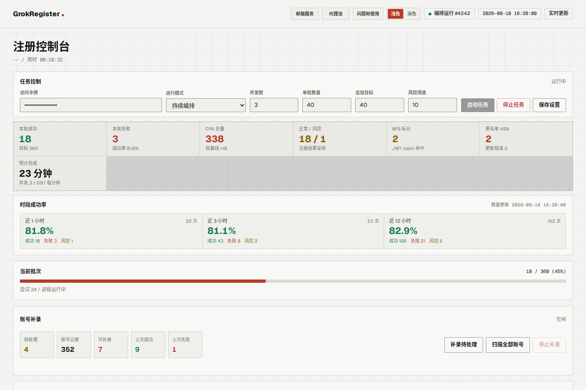
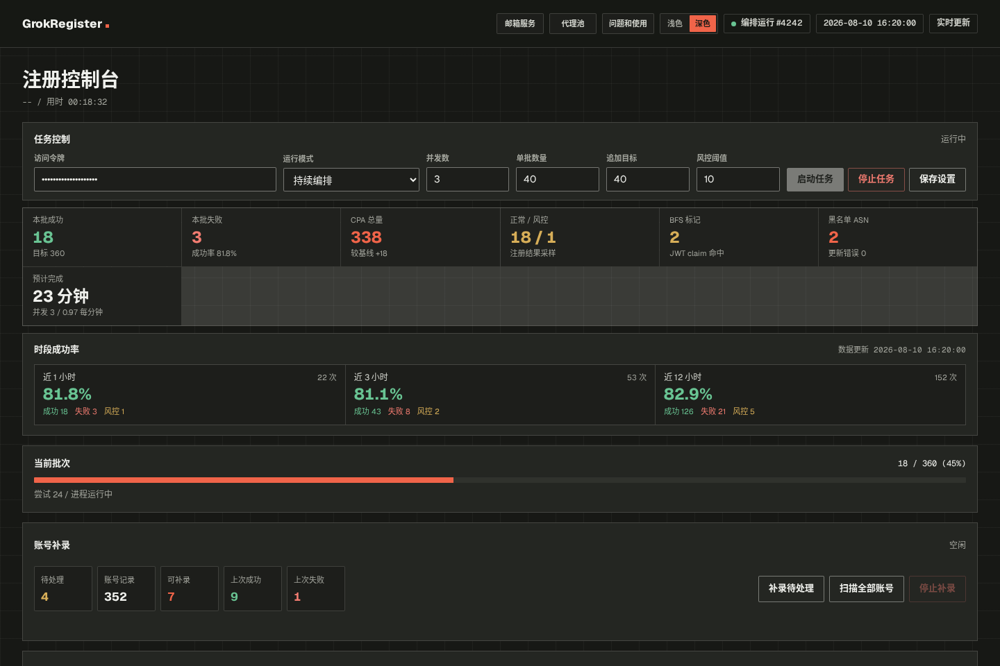
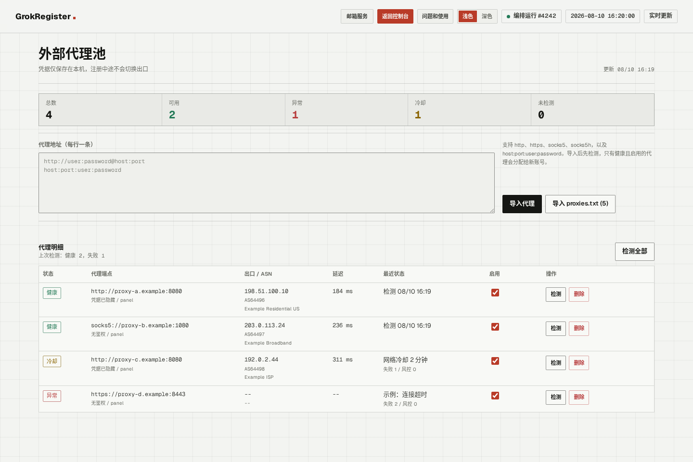
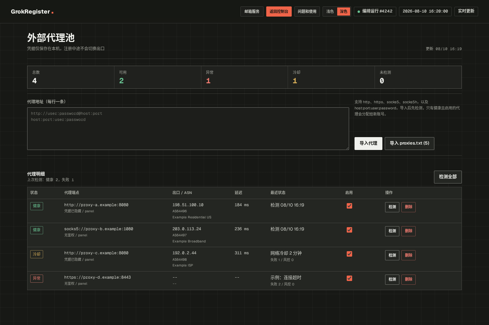
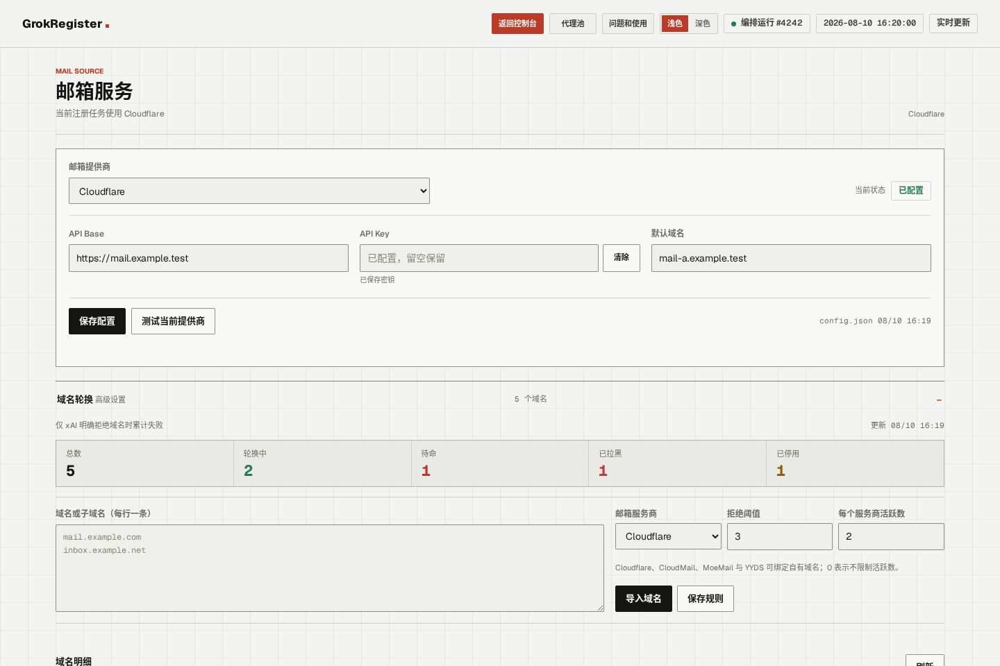
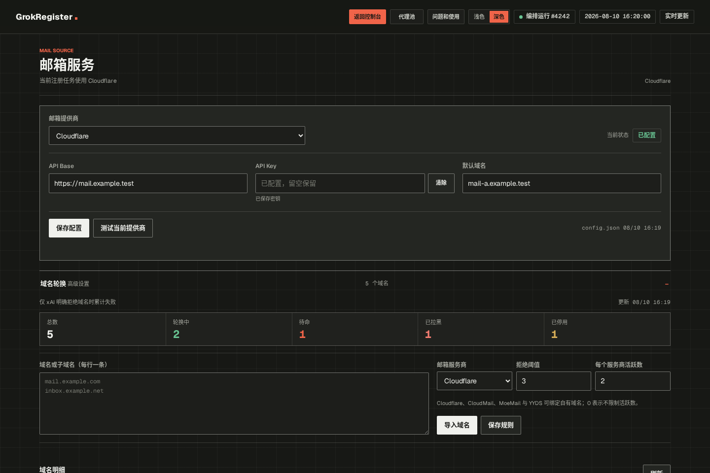

lij768423-svg / grok-register-panel
批量注册。
一块能看的面板。
Camoufox 注册机接上 Live 面板：代理池、邮箱轮换、ASN 黑名单、BFS / SSO 风控。Linux、macOS、Windows。


804
GitHub stars
254
forks
v0.4.4
最新 Release
22
天，从公开到现在
控制台
启停、并发、成功率，都在一块屏上。
编排器跑多轮 batch，风控满 N 暂停，ASN 自动扩黑。操作接口走 MONITOR_TOKEN，面板不回传原始日志尾。
代理池
自己的出口，探活、冷却、脱敏。
批量导入 HTTP / SOCKS，记录出口 IP、ASN、延迟。网络异常短冷却，注册风控长冷却。API 只返回脱敏端点。


邮箱
多种 provider，域名轮换可拉黑。
Cloudflare Worker 邮、DuckMail、YYDS、MailNest、CloudMail、MoeMail、Outlook RT、Inbucket。xAI 明确拒域才累计，达到阈值自动拉黑。


能力表
注册链路
邮箱 OTP → 资料页 → Turnstile → SSO → Device / OAuth → CPA / Grok2API
浏览器
Camoufox，Gecko 层指纹；Linux 无显示时面板自动 xvfb-run
风控
botFlag / policy=deny 早停；JWT bfs 扫描；SSO 状态面板不换 token
平台
Linux / macOS / Windows 本机批处理，不依赖把任务丢到远程机器
许可
MIT，基于 AaronL725/grok-register
装起来
Python 3.10+。pip 只装依赖，必须再跑 camoufox fetch 才能启动浏览器。
git clone https://github.com/lij768423-svg/grok-register-panel.git cd grok-register-panel python3 -m venv .venv && source .venv/bin/activate pip install -r requirements.txt python -m camoufox fetch
声明。 仅供自动化流程研究、自有环境联调与个人学习。请遵守 xAI / 邮箱 / 代理服务商条款与当地法律，勿用于未授权批量滥用。